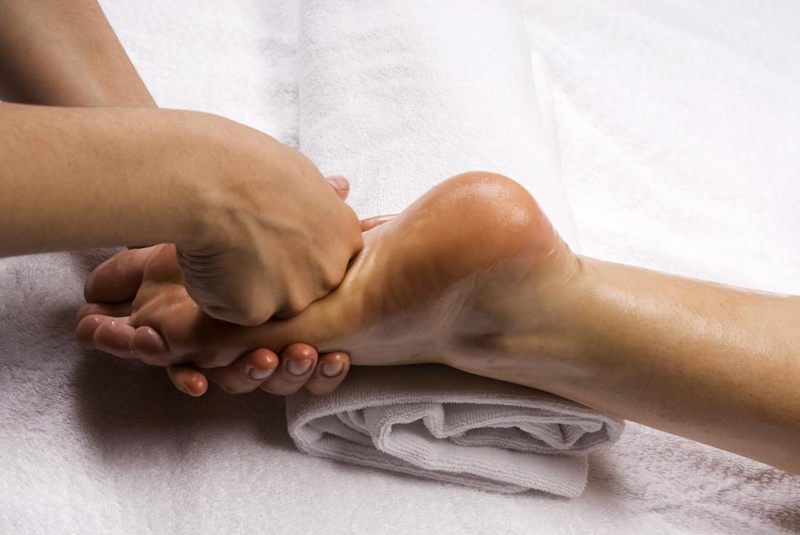

Benefits of Reflexology for Arthritis

Arthritis is a common condition that causes joint pain, stiffness, and inflammation. Many people seek alternative therapies like reflexology to manage their symptoms naturally. Reflexology is a therapeutic practice that involves applying pressure to specific points on the feet, hands, or ears to promote overall well-being. But how effective is reflexology for arthritis? Let’s explore its benefits and how it can aid in arthritis management.
Understanding Reflexology
Reflexology is based on the principle that certain points on the feet, hands, and ears correspond to specific organs and body systems. By stimulating these points, reflexologists aim to improve circulation, reduce stress, and enhance the body’s natural healing processes. For arthritis sufferers, reflexology may offer relief from pain, stiffness, and inflammation.
How Reflexology Helps with Arthritis
Reflexology is not a cure for arthritis, but it can complement conventional treatments by providing the following benefits:
1. Pain Relief
Arthritis pain can be debilitating, but reflexology may help reduce discomfort by stimulating nerve endings and improving blood circulation. This helps release endorphins, the body’s natural painkillers, leading to reduced pain perception.
2. Reduced Inflammation
Inflammation is a key factor in arthritis. Reflexology encourages better circulation, which helps remove toxins and reduce inflammatory responses in the body. By focusing on reflex points associated with the joints, reflexologists aim to alleviate swelling and improve comfort.
3. Improved Circulation
Poor blood circulation can worsen arthritis symptoms by limiting oxygen and nutrient delivery to affected joints. Reflexology enhances circulation, ensuring that essential nutrients reach the joints for better healing and reduced stiffness.
4. Enhanced Mobility and Flexibility
Joint stiffness is a common issue for arthritis patients. Reflexology sessions may help relax muscles and improve flexibility, making movement easier and less painful.
5. Stress Reduction and Relaxation
Arthritis can be physically and emotionally stressful. Reflexology promotes deep relaxation, reduces stress hormones, and helps individuals cope with chronic pain more effectively. Lower stress levels can also reduce inflammation and improve overall well-being.
6. Detoxification and Lymphatic Drainage
Reflexology aids in stimulating the lymphatic system, which helps remove toxins from the body. A well-functioning lymphatic system supports immune health and reduces the accumulation of waste that can contribute to inflammation.
7. Better Sleep Quality
Chronic pain often disrupts sleep, leading to fatigue and worsening symptoms. Reflexology can help regulate sleep patterns by promoting relaxation and balancing the nervous system, leading to better rest.
Reflexology Techniques for Arthritis
While a professional reflexologist can provide targeted treatment, arthritis patients can also practice self-reflexology techniques at home. Here are some common techniques:
1. Thumb Walking
A technique where the thumb is moved in a walking motion along reflex points on the foot to stimulate circulation and relieve pain.
2. Pressure Point Stimulation
Applying steady pressure to specific reflex zones related to the affected joints, such as the toes for knee pain or the heels for lower back pain.
3. Rotational Movements
Gently rotating the foot or fingers to enhance joint mobility and ease stiffness.
4. Warm Foot Soaks Before Reflexology
Soaking the feet in warm water before a session can help relax the muscles and enhance the benefits of reflexology.
Key Reflexology Points for Arthritis Relief
Each area of the foot corresponds to different parts of the body. Here are some key reflexology points beneficial for arthritis relief:
- Toes and Ball of the Foot: Related to the head, neck, and shoulders, these areas help relieve upper body tension.
- Heel: Connected to the lower back and sciatic nerve, beneficial for those with arthritis affecting the spine.
- Arch of the Foot: Linked to the digestive system and may help reduce inflammation.
- Base of the Toes: Helps with hand and wrist pain, ideal for arthritis in the fingers.
- Outer Edge of the Foot: Corresponds to the knee and hip area, useful for relieving joint pain in these areas.
Precautions and Considerations
While reflexology is generally safe, arthritis patients should take certain precautions:
- Consult with a healthcare provider before starting reflexology, especially if you have severe arthritis or other medical conditions.
- Work with a certified reflexologist who has experience in treating arthritis patients.
- Avoid excessive pressure on inflamed or sensitive joints to prevent discomfort.
- Stay hydrated after a session to aid detoxification.
Combining Reflexology with Other Natural Remedies
For optimal arthritis management, reflexology can be combined with other natural therapies, such as:
- Gentle Exercises: Low-impact activities like yoga and swimming help maintain joint flexibility.
- Anti-Inflammatory Diet: Consuming foods rich in omega-3 fatty acids, antioxidants, and whole grains can support joint health.
- Massage Therapy: Helps improve circulation and reduce muscle tension.
- Acupuncture: Another alternative therapy that may relieve arthritis pain.
- Aromatherapy: Essential oils like lavender and eucalyptus can enhance relaxation during reflexology sessions.
Conclusion
Reflexology offers a non-invasive, holistic approach to managing arthritis symptoms. By improving circulation, reducing pain, and promoting relaxation, reflexology can significantly enhance the quality of life for arthritis sufferers. While it is not a substitute for medical treatment, integrating reflexology into your arthritis care routine can provide natural and lasting benefits.